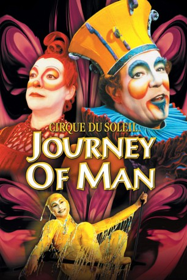

#6749 Cirque du Soleil - Journey of Man
 
 IMDB-Wertung: 7.0 / 10
IMDB-Wertung: 7.0 / 10  Metascore: 0
Metascore: 0 
Cirque du Soleil JOURNEY OF MAN ist eine atemberaubende Reise durch die verschiedenen Stadien der menschlichen Entwicklung, von der Geburt bis zur Reife, bei der jede Phase vom Cirque du Soleil dargestellt wird. Das für den Cirque du Soleil so charakteristische Feuerwerk an Farben, Musik und Kostümen präsentiert sich vor der Kulisse verschiedener, natürlicher und historischer Wahrzeichen aus aller Welt und verwandelt sich so in einen unvergleichlichen Triumphzug der Kunst. Vom Licht- und Klangzauber zum Auftakt, der die Entstehung des Universums darstellt, begleitet Cirque du Soleil Journey of Man das Kind des Universums von seiner Geburt, über seine Jugend und das Erwachsenenalter bis hin zur Reife. Ein überwältigendes Fest der Sinne, überragende Kunstfertigkeit und formvollendete Eleganz schaffen dieses einmalige Erlebnis.
Jahr: 2000
Dauer: 37 Minuten
FSK:
Land: Kanada Studio: Sony Pictures ClassicsTonspuren:
Untertitel:
Auflösung: SD (640x480) Größe: 702 MB
Genre: Drama, Fantasy, Familie, Kurzfilm, Musical
Regisseur: Keith Melton
Drehbuch: Steve Roberts
Soundtrack:
Darsteller:
 Ian McKellen als Narrator
Ian McKellen als Narrator- Lorenzo Pisoni als Character Bungee Act, Moha-Samedi Puppet
- Nicky Dewhurst als Young Man
- Brian Dewhurst als Old Man
- Ana Karagy als Vagabond Girl
- Chris Van Wagenen als Youth
- Kenny Raskin als Man
- Cully Smoller als Infant / Child
- Mikhail Matorin als Cube Act
- Yves Decoste als Statue Act
- Marie-Laure Mesnage als Statue Act
- Jennifer Clément als Character Statue Act, Mephisto Stilt Demon
- Konstantine Besschetnyj als Banquine
- Yelena Kolesnikova als Banquine
- Aleksandr Leontiev als Banquine
- Oleg Ouchakov als Banquine
- Aleksandr Pestov als Banquine
- Denis Pirogov als Banquine
- Igor Strizhanov als Banquine
- Aleksandr Zajtsev als Banquine
- Tatiana Gousarova als Banquine
- Sergei Okhai als Banquine
- Roman Polishchuk als Banquine
- Dmitro Sidorenko als Banquine
- Aleksandr Majorov als Banquine
- Konstantin Zakharenko als Banquine
- Mariya Akhlatkina als Taiko Drummer
- Nathalie B. Bollinger als Taiko Drummer
- Pierre Dube als Taiko Drummer
- Natasha Hallett als Taiko Drummer
- Annick Moreau als Taiko Drummer
- Ursula Trpin als Taiko Drummer
- Mark Ward als Taiko Drummer
- Gregory Wise als Taiko Drummer
- Michelle Wise als Taiko Drummer
- Sylvie Frechette als Swimmer
- Heather Stanley als Swimmer
- Isabelle Thomas als Swimmer
- Katy Savoie als Swimmer
- Kari Kreitzer als Swimmer
- Suzannah Bianco als Swimmer
- Jill Sabrina Sudduth als Swimmer
- Linda Belanger als Bungee
- Martin Boisvert als Bungee
- Shana Carroll als Bungee
- Carolyne Vita als Bungee
- Sandra Feusi als Bungee
- Chantal Côté als Character Bungee Act, Palmier
- Michael John Rosenberger als Bungee
- Micheline Doucette als Character Bungee Act, Palmier
Datei: X:\Dokumentationen\Cirque du Soleil\Cirque du Soleil - Journey of Man (2000, FSK, 640x480).avi seit 11.08.2017
Festplatte: HD Serien(SU-Z)+Dokus+Musik
 Es gibt insgesamt 17 Filme in der Gruppe 'Dokumentationen\Cirque du Soleil'
Es gibt insgesamt 17 Filme in der Gruppe 'Dokumentationen\Cirque du Soleil'